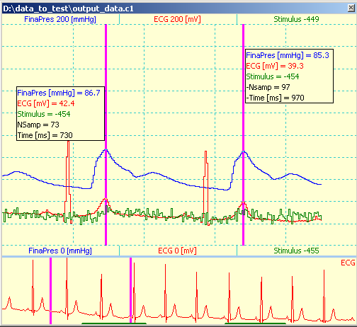
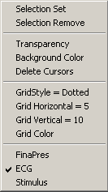
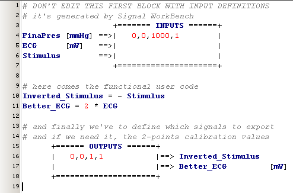

april 2007
Signal Workbench
Introduction
The signal workbench is highly sophisticated graphical calculator, specially equipped for off-line analysis of time series and development of algorithm for real-time analysis.
Although it was my first intention to create this program completely in Python, I had the feeling that my knowledge of Delphi would result in a much quicker result, especially because of the calculation tree and the signal displays. (Maybe the overwhelming collection of different graphical libraries in Python also forced this choose. At the moment I've the feeling that wxWidgets is the future way to go, but I've no idea yet if and what wrapper to use for wxWidgets.)
The main items of the signal workbench are:
Calculation Tree
The global view of a total calculation is represented by a tree, where each node in the tree performs a (small) part of the calculation. The top-node in general reads the raw datafile.
For each node in the tree yields:
From the code-editor, pressing F9 will recompile the code of the active node and redisplay the output signals (if visible). Pressing shift-F9 will recompile (and redisplay) the active node and all its descendants.
Signal Displays
The signal displays are highly automated, while leaving great flexibility both by programming and user manipulation. Signals can be viewed, zoomed and measured. The ability to make one or more signal displays transparent, gives a unique feature to overlay several signal displays for easy comparison. The signal displays are quit light-weighted, so you can have a lot of them open simultaneous.
Each signal display consists of 2 graphical windows, the bottom window (also called time-base window), holding the complete time-history of one selected signal, meant for navigating and selecting along the time-dimension. The top window, holding all (or a selected set) signals over a (possibly) limited time segment, is meant for zooming into details and for doing exact measurements.
The following items are used to control the appearance of the signal display:

Signal Selecting
through the RM-menu in the upper window you can select which signals are visible or not. Labels are automatically shown, with as much information as possible. Which part of the visible signals along the time-axis will be shown, is determined by the 2 cursors in the time-base window (showing the complete time-axis), which can be placed by LM and removed by MM (or RM-menu).
Through the RM-menu of the time-base window or by clicking on the signal label in the time-base window, you can select the signal that's used in the time-base window. The color of the signal in the time-base window is the same as the signal color in the main-window. The amplitude scaling of the signal in the time-base window is always automatic.
|
Signal Appearance By clicking on one of the lower or upper signal labels, the values of the labels can be changed, the color of the signal can be changed or an auto-scale action can be performed. Auto-scale is performed only once, each time the checkbox is checked. |
|
Background Color can be changed through the RM-menu. Grid appearance is also done through the RM-menu. Transparency Each signal display can be made transparent for easy comparing different algorithms. Transparency can be set through the RM-menu of any of the signal windows. Transparency only works for windows-2000 and up. |
 |
Cursor Measurement
With the left-MB in the main signal window, you can position 2 cursors in the upper signal window for measurement. Removing of the cursors is done through the middle-MB or the RM-menu. Each cursor has a panel attached, in which the actual real-world values of the visible signals are shown. The vertical position of the panels is determined by the mouse cursor. The left panel will also show the startpoint of the signals, both in samples and in (mili-)seconds. The right panel will also display the distance between the 2 cursors both in samples and in (mili-)seconds. When the signal window has focus, the position of the cursors can be fine-tuned with the left-arrow and right-arrow key for the left cursor and shift-left-arrow and shift-right-arrow key for the right cursor. Larger steps can be made by the page-up and page-don key (+shift for the right cursor).
Time Selection
The two top-items of the RM-menu are designed to select certain time regions for further calculations. With "Selection Set", a new marker is placed on the time-axis, toggling the selection on or off. In the figure above the dark green lines at the bottom, are the selected regions. Removing a toggle point is also done through the RM-menu.
If the selection is used in the next calculation is furthermore determined by the calculation function itself.
Each node in the calculation tree, is connected with a piece of (extended-) Python code. Let's take a look at a very simple example below:

Lines 1..7 defines all the input signals,
their names and there calibration values. These lines are generated by Signal WorkBench, from the information of the parent node, so don't edit them manually !! We see that there are 3 input signals, called FinaPres, ECG and Stimulus. Some of these signals also have defined in what units they are expressed, like here FinaPres is expressed in units mmHg. The units must be separated by at least 1 space from the signal-name. Input signals can also have 2-points calibration value, like here FinaPress "0,0,1000,1". Both the units and calibration units have no real meaning for the core Python calculations, but are mainly meant for the graphical displays. They are specified here, so you can use the correct units and calibration for the output signals (if you want).
Lines 10..11, the functional user code.
In this example we create some new signals (or maybe they are just views), derived from the input signals. Note that these signals are not scalars but vectors. "Inverted_Stimulus" is an inverted version of the third input signal. "Better_ECG" is an amplified version of the second input signal. This section can consist completely of regular Python code, but may also contain extended-Python code.
Lines 15..18, the definition of the output signals.
The output block (if present), serves two different purposes:
1. which signals will be available in the graphical display
2. to pass parameters to it's children
You can define which signals should be defined as output and thereby made available as an input to the next elements in the calculation tree. This looks very similar to the input definition, and again calibration and units are optional and mainly meant for the graphical displays.
Output signals can either be 1-dimensional vectors or 2-dimensional arrays. In the code below, "data" is an 2-dimensional array of size [2,18]. "one_signal" is one row from the array "data", and also a row can be specified directly in the output, like "data[3]". The length of the last dimension of all vectors and arrays will extended to the longest last dimension, by extending the shorter vectors with their own last value. If a 2-dimensional array is specified, the names of the individual columns is generated as shown in the picture on the right.
The figure below also shows, that the "OUTPUTS" block doesn't need to be the final code. In this case after the OUTPUTS block, a statement is written, to print the total output array.
Compile
Either from the main-menu (Tools | Compile), pressing F9, or from the statusbar the Python compiler is started, with the script available in the current editor. If higher nodes have been started, then the globals from these higher nodes are also available. Through the main-menu (Tools | Compile-2) or pressing shift-F9, the Python compiler is started for the current node and all it's descendants.
Compiler Errors
When a compiler error occurs, the Python error message is captured in the lower interactive editor (see picture below) and the cursor automatically jumps to the line with the error in the upper editor window. Note that the line numbers in the error message doesn't need to be the same as the line-number in the editor, this is because the script is pre-processed and so there are some extra lines added. You can always jump to the error, by clicking on the line in the lower interactive editor with the left mouse button, or by pressing Enter, when cursor is on the line "#<< File "<string>", ..."

Graphical Presentation
And here the graphical presentation of the above code is given. You can see that Signal-names, signal-units and calibration values are nicely copied from the above code. (Yes, in this example calibration is not very meaningful ;-)
Example of extended-Python code
The next code snippet, connects the existing signal "FinaPres" to a Bloodpressure analysis function, of which the parameters can easily be controlled by the parameters defined in the box.

Generated code
Save Code to File
From the RM-menu in the main code editor, you can save the code of the current editor (and the code of all it's children, if you want) to a normal python code file.
ToDo
File format
Signals are stored in the following file format:
ID_length ,byte =8 : 1 byte
ID ,string ='MID-poly' : 8 bytes
version ,smallint =8 : 2 bytes
NChan ,integer = : 4 bytes
Sample Frequency,integer = : 4 bytes
--------------------------------------------------
headersize = 19 bytes